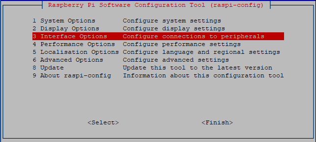
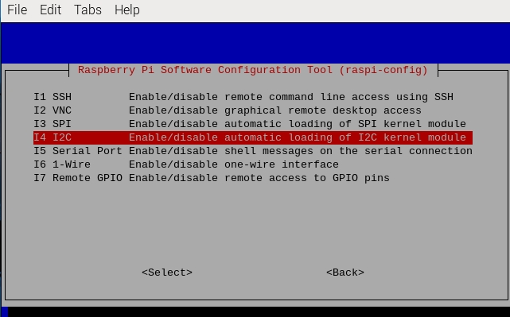
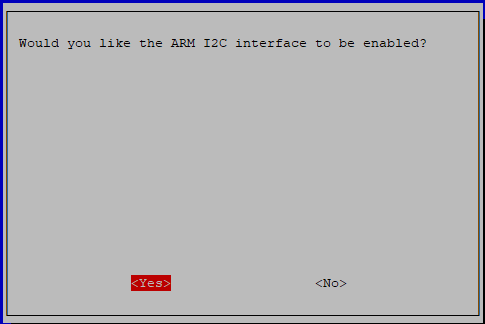

Bemerkung
Hallo und willkommen in der SunFounder Raspberry Pi & Arduino & ESP32 Enthusiasten-Gemeinschaft auf Facebook! Tauchen Sie tiefer ein in die Welt von Raspberry Pi, Arduino und ESP32 mit anderen Enthusiasten.
Warum beitreten?
Expertenunterstützung: Lösen Sie Nachverkaufsprobleme und technische Herausforderungen mit Hilfe unserer Gemeinschaft und unseres Teams.
Lernen & Teilen: Tauschen Sie Tipps und Anleitungen aus, um Ihre Fähigkeiten zu verbessern.
Exklusive Vorschauen: Erhalten Sie frühzeitigen Zugang zu neuen Produktankündigungen und exklusiven Einblicken.
Spezialrabatte: Genießen Sie exklusive Rabatte auf unsere neuesten Produkte.
Festliche Aktionen und Gewinnspiele: Nehmen Sie an Gewinnspielen und Feiertagsaktionen teil.
👉 Sind Sie bereit, mit uns zu erkunden und zu erschaffen? Klicken Sie auf [hier] und treten Sie heute bei!
I2C configuration
Schritt 1: Aktivieren Sie den I2C-Port Ihres Raspberry Pi (Wenn Sie ihn aktiviert haben, überspringen Sie diesen; wenn Sie nicht wissen, ob Sie das getan haben oder nicht, fahren Sie bitte fort).
sudo raspi-config
3 Interfacing options
I4 I2C
<Yes>, dann <Ok> -> <Finish>
Schritt 2: Prüfen Sie, ob die i2c-Module geladen und aktiv sind.
lsmod | grep i2c
Dann erscheinen die folgenden Codes
(die Nummer kann unterschiedlich sein),
falls diese nicht erscheinen,
starten Sie den Raspberry Pi bitte mit sudo reboot neu.
i2c_dev 6276 0
i2c_bcm2708 4121 0
Schritt 3: Installieren Sie i2c-tools.
sudo apt-get install i2c-tools
Schritt 4: Überprüfen Sie die Adresse des I2C-Geräts.
i2cdetect -y 1 # For Raspberry Pi 2 and higher version
i2cdetect -y 0 # For Raspberry Pi 1
pi@raspberrypi ~ $ i2cdetect -y 1
0 1 2 3 4 5 6 7 8 9 a b c d e f
00: -- -- -- -- -- -- -- -- -- -- -- -- --
10: -- -- -- -- -- -- -- -- -- -- -- -- -- -- -- --
20: -- -- -- -- -- -- -- -- -- -- -- -- -- -- -- --
30: -- -- -- -- -- -- -- -- -- -- -- -- -- -- -- --
40: -- -- -- -- -- -- -- -- 48 -- -- -- -- -- -- --
50: -- -- -- -- -- -- -- -- -- -- -- -- -- -- -- --
60: -- -- -- -- -- -- -- -- -- -- -- -- -- -- -- --
70: -- -- -- -- -- -- -- --
Wenn ein I2C-Gerät angeschlossen ist, wird die Adresse des Geräts angezeigt.
Schritt 5:
Für Benutzer der Sprache C: Installieren Sie libi2c-dev.
sudo apt-get install libi2c-dev
Für Python-Benutzer:
Aktivierung der virtuellen Umgebung.
Bemerkung
Bevor Sie die Aktivierung durchführen, müssen Sie sicherstellen, dass Sie eine virtuelle Umgebung erstellt haben. Bitte beachten Sie: Erstellen einer virtuellen Umgebung.
Jedes Mal, wenn Sie den Raspberry Pi neu starten oder ein neues Terminal öffnen, müssen Sie erneut den folgenden Befehl ausführen, um die virtuelle Umgebung zu aktivieren.
source myenv/bin/activate
Sobald die virtuelle Umgebung aktiviert ist, sehen Sie den Umgebungsnamen vor dem Befehlszeilen-Prompt, was darauf hinweist, dass Sie innerhalb der virtuellen Umgebung arbeiten.
Installation von smbus für I2C.
sudo pip3 install smbus2
Beenden der virtuellen Umgebung.
Wenn Sie Ihre Arbeit abgeschlossen haben und die virtuelle Umgebung verlassen möchten, führen Sie einfach folgenden Befehl aus:
deactivate
Dadurch kehren Sie zur globalen Python-Umgebung des Systems zurück.